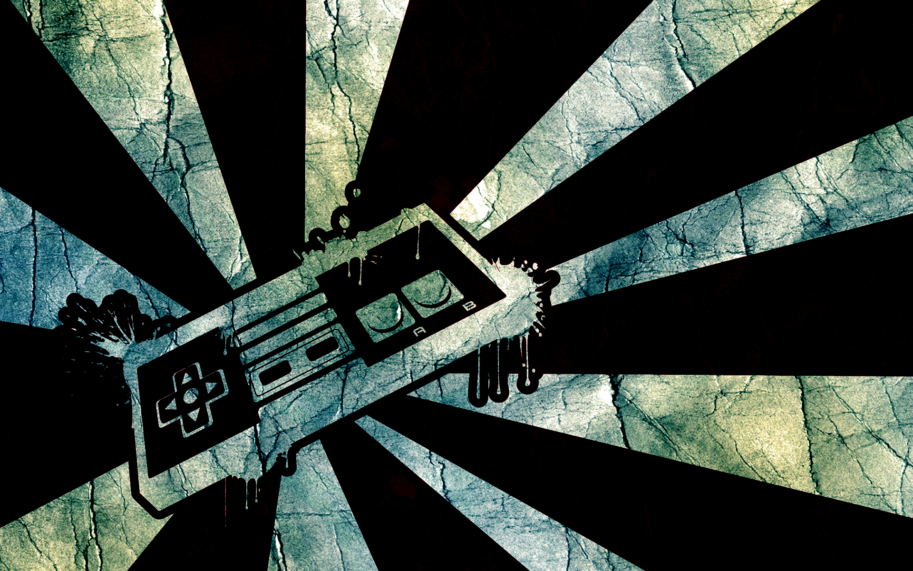

Gaming Rod es una pagina en la que se redactan de reseñas casuales a varios titulos reconocidos y uno que otro arte escondido en el apartado gamer. En la que detallaremos aspectos diferentes, con el objetivo de conocer mas afondo nuestros videojuegos favoritos, descubrir y analizar con nosotros sobre las proximas entregas de estos titulos.
Sebastian Chavez - Juan Pablo Gonzalez